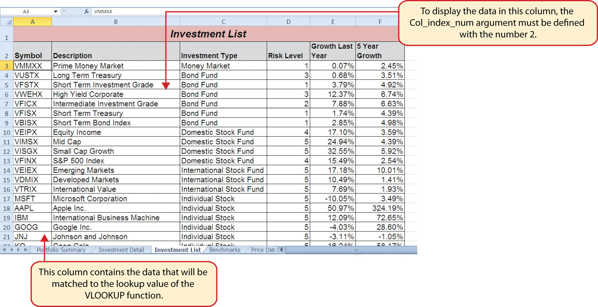
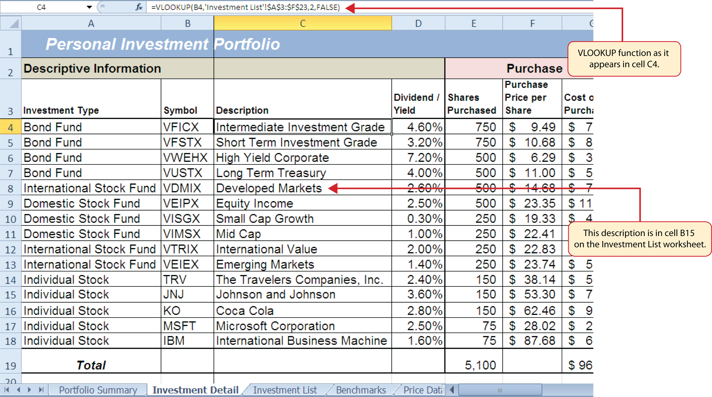
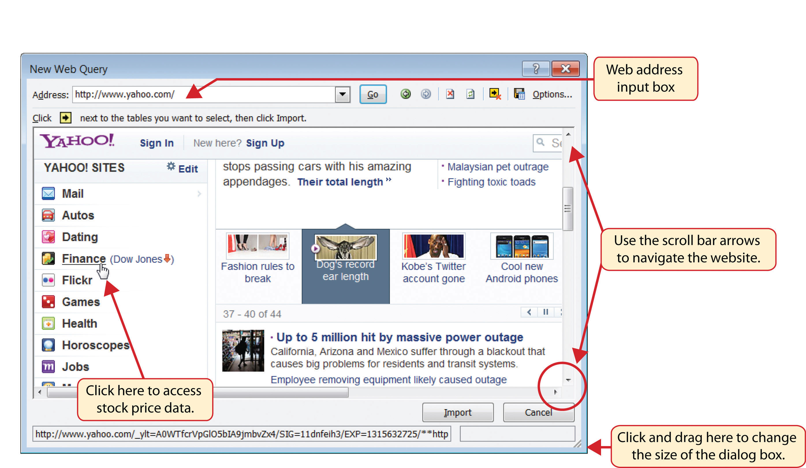
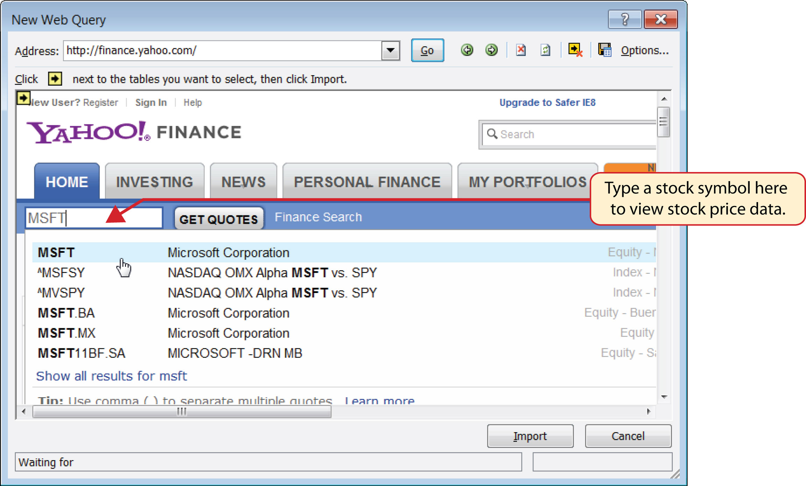
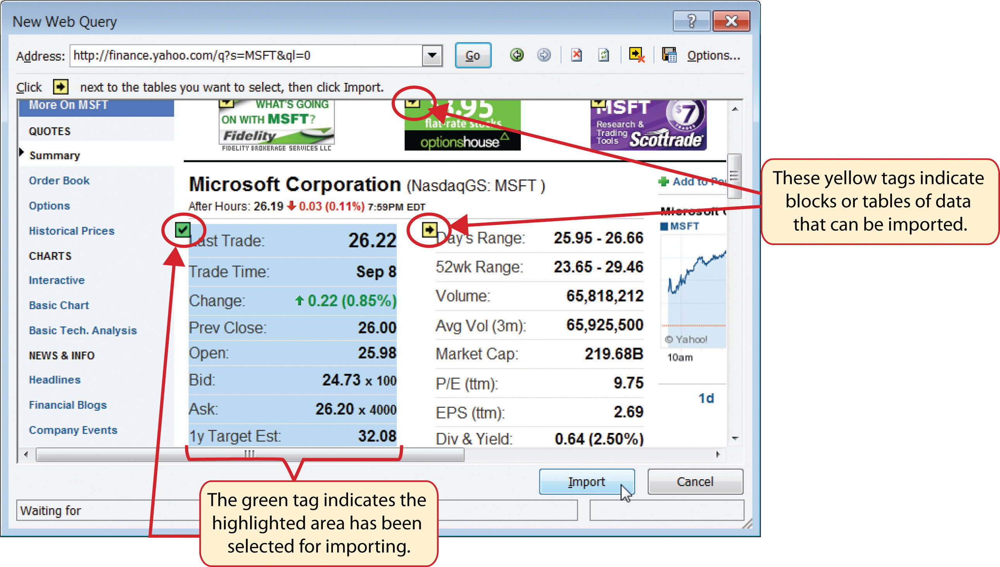

The final section of this chapter addresses lookup functions. Lookup functionsFunctions that are used to search for and display data located in an existing worksheet or in other worksheets or workbooks. are typically used to search for and display data located in other worksheets or workbooks. The two lookup functions we will use in our example of the personal investment portfolio are the VLOOKUP and HLOOKUP functions. In addition to demonstrating these functions, we will also show how we can enhance the personal investment portfolio workbook with a web query. Web queries are used to bring live or current data into a worksheet from a website.
Follow-along file: Continue with Excel Objective 3.00. (Use file Excel Objective 3.14 if starting here.)
The VLOOKUP function is typically used to access and display data located in another worksheet or workbook. The function can also be used to access and display data located in the same worksheet. This is a very powerful and versatile function because it eliminates the need to copy or recreate data that exists in other worksheets or workbooks. It is called a VLOOKUP function because the function will search vertically down the first column of a range of cells to find what is called a lookup value. This process is very similar to the statistical IF functions in Section 3.2 "Statistical IF Functions". You will recall that these functions used criteria to select cells from a range that was used in the mathematical output. The VLOOKUP function is essentially performing the same process; however, instead of selecting multiple cells from a range, the function is only looking for one specific cell location. Once the function finds the specific cell location, it will display the contents of that cell location or another cell location in the range. Before using the VLOOKUP function in the personal investment portfolio workbook, it is strongly recommended that you carefully read the definitions for the function arguments listed in Table 3.10 "Arguments for the VLOOKUP Function".
Table 3.10 Arguments for the VLOOKUP Function
| Argument | Definition |
|---|---|
| Lookup_value | This argument is typically defined with a cell location, number, or text. Text data must be enclosed in quotation marks for this argument. The function will search for the criteria entered into this argument in the first column of the range used to define the Table_array argument. For example, if the word Hat is used to define this argument, the function will search for the word Hat in the first column of the range used to define the Table_array argument. |
| Table_array | Range of cells that contain data you wish the VLOOKUP function to search though (Lookup_value) and display. This cell range must contain the criteria used to define the Lookup_value in the first column. For example, if the range A2:D15 is used to define this argument, the criteria used to define the Lookup_value argument must exist in Column A. |
| Col_index_num | This is the column index number argument. It is defined with the number of columns to the right of the first column in the range used to define the Table_array argument that contains the data you wish to display. For example, suppose the data you wish the function to display is contained in Column C. If the range used to define the Table_array argument is A2:D15, then the column index number will be 3. Counting the columns to the right of the first column in this range, Column A would be 1, Column B would be 2, and Column C would be 3. It is important to remember to count the first column in the table array range as 1. |
| [Range_lookup] | This argument is defined with either the word TRUE or the word FALSE. When this argument is defined with the word FALSE, the function will look for an exact match to the criteria used to define the Lookup_value argument in the first column of the table array range. It is important to note the function will search the entire range to find a match. If this argument is defined with the word TRUE, the function will look for a value that is an exact match or the closest match that is less than the lookup value. For example, if the lookup value is 80 and the highest value in the first column of the table array range is a 78, the function will consider 78 a match for the number 80. However, if the lookup value is 80 and the lowest number in the first column of the table array range is 85, the function will produce an error. This is because the number 80 and any value less than 80 do not exist in the first column of the table array range. It is important to note that if you define this argument with the word TRUE, the data in the table array range must be sorted in ascending order. This is because the function will stop searching for a match once the value in the first column exceeds the lookup value. If the data in the table array range is not sorted, the function can either produce an error code or display an erroneous result. This argument is in brackets because if it is not defined it will automatically be defined with the word TRUE. |
Using a TRUE Range Lookup for VLOOKUP and HLOOKUP
If you are defining the Range_lookup argument with the word TRUE for either the VLOOKUP or HLOOKUP function, the range used to define the Table_array argument must be sorted in ascending order. For the VLOOKUP function, the table array range must be sorted from smallest to largest or from A to Z based on the values in the first column. For the HLOOKUP function, the table array range must be sorted from left to right based on the values in the first row, from smallest to largest or A to Z.
You may have noticed that on the Investment Detail worksheet, the Description column is blank (see Figure 3.2 "Investment Detail Worksheet"). Descriptions for several investments are included in the workbook in the Investment List worksheet as shown in Figure 3.42 "Investment List Worksheet". The VLOOKUP function will be used to search for a specific symbol in Column A of the Investment List worksheet and display the description for that symbol located in Column B. The following steps explain how to accomplish this:
Figure 3.42 Investment List Worksheet
Figure 3.43 "Completed Function Arguments Dialog Box for the VLOOKUP Function" shows the completed Function Arguments dialog box for the VLOOKUP function. Notice that the Range_lookup argument is defined with the word FALSE. This will direct the function to search for an exact match to the lookup value and will also direct the function to search the entire first column of the table array range. Finally, it is important to note the absolute reference on the table array range. This will prevent the table array range from changing when the function is pasted into other cell locations.
Figure 3.43 Completed Function Arguments Dialog Box for the VLOOKUP Function

Figure 3.44 "Results of the VLOOKUP Function in the Investment Detail Worksheet" shows the results of the VLOOKUP function in the Investment Detail worksheet. The function is searching for each symbol in Column B of the Investment Detail worksheet in Column A of the Investment List worksheet. When the function finds a match, it will display whatever is in the cell location two columns to the right, or Column B, in the Investment List worksheet. For example, the symbol VDMIX, which is in cell B8 on the Investment Detail worksheet (see Figure 3.44 "Results of the VLOOKUP Function in the Investment Detail Worksheet"), is also in cell A15 on the Investment List worksheet (see Figure 3.42 "Investment List Worksheet"). As a result, the function is displaying whatever is in cell B15 on the Investment List worksheet, which is the description “Developed Markets.”
Figure 3.44 Results of the VLOOKUP Function in the Investment Detail Worksheet
Absolute References on the Table Array Range for the VLOOKUP and HLOOKUP Functions
If you are copying and pasting a VLOOKUP or HLOOKUP function, you will most likely need to place an absolute reference on the range used to define the Table_array argument. The table array range will change because of relative referencing once the function is pasted to new cell locations. This may result in an error output for either the VLOOKUP or HLOOKUP function. This is because the function will not be able to find the lookup value since the range has been adjusted. If you are defining the Range_lookup argument with the word TRUE, an adjustment in the table array range may result in an erroneous output.
Follow-along file: Continue with Excel Objective 3.00. (Use file Excel Objective 3.15 if starting here.)
The HLOOKUP function serves the same purpose as the VLOOKUP function. The HLOOKUP function can be used to display data from another worksheet or workbook. However, instead of searching for the lookup value vertically down the first column of the table array range, the HLOOKUP function searches horizontally across the first row of the table array range. When the function finds a match for the lookup value, it will display the contents in a cell location based on a row index number. This number designates how many rows below the first row of the table array range the function should display. Table 3.11 "Arguments for the HLOOKUP Function" provides a definition for each argument of the HLOOKUP function. It is best to review the definitions of these arguments carefully before using the function.
Table 3.11 Arguments for the HLOOKUP Function
| Argument | Definition |
|---|---|
| Lookup_value | This argument is typically defined with a cell location, number, or text. Text data must be enclosed in quotation marks for this argument. The function will search for the criteria entered into this argument in the first row of the range used to define the Table_array argument. For example, if the word Hat is used to define this argument, the function will search for the word Hat in the first row of the range used to define the Table_array argument. |
| Table_array | Range of cells that contain data you wish the HLOOKUP function to search though (Lookup_value) and display. This cell range must contain the criteria used to define the Lookup_value in the first row. For example, if the range A2:D15 is used to define this argument, the criteria used to define the Lookup_value argument must exist in Row 2. |
| Row_index_num | This is the row index number argument. It is defined with the number of rows below the first row in the range used to define the Table_array argument that contains the data you wish to display. For example, suppose the data you wish the function to display is contained in Row 5. If the range used to define the Table_array argument is A2:D15, then the column index number will be 4. Counting the rows below the first row in this range, Row 2 would be 1, Row 3 would be 2, Row 4 would be 3, and Row 5 would be 4. It is important to remember to count the first row in the table array range as 1. |
| [Range_lookup] | This argument is defined with either the word TRUE or the word FALSE. When this argument is defined with the word FALSE, the function will look for an exact match to the criteria used to define the Lookup_value argument in the first row of the table array range. It is important to note the function will search the entire range to find a match. If this argument is defined with the word TRUE, the function will look for a value that is an exact match or the closest match that is less than the lookup value. For example, if the lookup value is 80 and the highest value in the first row of the table array range is a 78, the function will consider 78 a match for the number 80. However, if the lookup value is 80 and the lowest number in the first row of the table array range is 85, the function will produce an error. This is because the number 80 and any value less than 80 do not exist in the first row of the table array range. It is important to note that if you define this argument with the word TRUE, the data in the table array range must be sorted based on the values in the first row in ascending order from left to right. This is because the function will stop searching for a match once the value in the first row exceeds the lookup value. If the data in the table array range is not sorted, the function can either produce an error code or display an erroneous result. This argument is in brackets because if it is not defined it will automatically be defined with the word TRUE. |
The HLOOKUP function will be used on the Portfolio Summary worksheet to display the benchmark growth rates in the range G4:G7. A benchmarkA value or qualitative example that can be used as a standard point of comparison. Results that are higher or better than a benchmark are typically considered positive, whereas results that are lower or worse than the benchmark are typically considered negative. is a value that can be used as a standard point of comparison. The Benchmarks worksheet contains growth rates at different year intervals for the benchmarks that will be used to compare the performance for each investment type (see Figure 3.45 "Benchmarks Worksheet"). For the purposes of this workbook, we will be comparing the growth rates for each investment type to the 5-year average growth rate for the benchmarks categories listed in the range H4:H7. The following steps explain how to construct the HLOOKUP function to display the 5-year benchmark values in the Portfolio Summary worksheet:
Figure 3.45 Benchmarks Worksheet

Figure 3.46 "Completed Function Arguments Dialog Box for the HLOOKUP Function" shows the completed Function Arguments dialog box for the HLOOKUP function. The row index number 4 indicates that the function will display the contents of the cell location in the fourth row of the table array range.
Figure 3.46 Completed Function Arguments Dialog Box for the HLOOKUP Function

Figure 3.47 "Completed Portfolio Summary Worksheet" shows the output of the HLOOKUP function. Notice that the output of the function in cell G4 is 6.0%. This is because the lookup value was defined with the entry in cell H4, which is the Barclays index. Looking at Figure 3.45 "Benchmarks Worksheet", if you count the first row of the table array range as Row 1, the value 6.03% is the fourth row in the Barclays column. Since the values in Column G on the Portfolio Summary worksheet are set to 1 decimal place, the value is displayed as 6.0%.
Figure 3.47 Completed Portfolio Summary Worksheet

#N/A and #REF! Errors with Lookup Functions
If you receive the #N/A error code when using the VLOOKUP or HLOOKUP function, it indicates that Excel cannot find the lookup value in the table array range. Check that the lookup value exists in the first column for the VLOOKUP, or the first row for the HLOOKUP, in the range used to define the Table_array argument. You may also see this error code if you copy and paste the function and forget to put an absolute reference on the range used to define the Table_array argument. The #REF! error code indicates that the column index number or row index number exceeds the number of columns or rows in the range used to define the Table_array argument.
Follow-along file: Continue with Excel Objective 3.00. (Use file Excel Objective 3.16 if starting here.)
The final skill we will demonstrate in this chapter is the creation of a web query. Web queries allow you to import external data from a website into an Excel worksheet. We can enhance the personal investment portfolio demonstrated in this chapter through the use of web queries to import current stock prices from a website. Once a stock price is imported into the workbook, a cell reference can be added to the Investment Detail worksheet to reflect the most current price for an investment. It is important to note that you must establish an Internet connection before proceeding with this exercise. The following steps explain how to retrieve the current stock price for Microsoft from the Yahoo! Finance website and import it into the Price Data worksheet:
Use the scroll bar on the right side of the New Web Query dialog box to locate the Finance link on the left navigation pane of the website. Click the Finance link (see Figure 3.48 "New Web Query Dialog Box").
Figure 3.48 New Web Query Dialog Box
Click in the Get Quotes input box, type the stock symbol MSFT, and press the ENTER key on your keyboard (see Figure 3.49 "Get Quotes Input Box on Yahoo! Finance").
Figure 3.49 Get Quotes Input Box on Yahoo! Finance
When viewing the stock price data for MSFT, you will see several yellow boxes or tags with arrows (see Figure 3.50 "Selecting a Tag to Import Data from a Website"). These tags indicate blocks or tables of data that can be imported into a worksheet from a website. Click the yellow tag next to the Last Trade price. The yellow tag will turn green with a check mark inside of it.
Figure 3.50 Selecting a Tag to Import Data from a Website
Click the Import button at the bottom of the New Web Query dialog box. This will open the Import Data dialog box, as shown in Figure 3.51 "Import Data Dialog Box".
Figure 3.51 Import Data Dialog Box

Click the box next to the “Refresh every” property. Change the refresh minutes to 5. This means the query will automatically search the website every 5 minutes to retrieve an updated stock price for Microsoft (see Figure 3.52 "Final Settings for the External Data Range Properties Dialog Box").
Figure 3.52 Final Settings for the External Data Range Properties Dialog Box

Figure 3.53 Stock Price for Microsoft Imported into the Price Data Worksheet

Which of the following is true with respect to the range of cells used to define the Table_array argument when using the VLOOKUP function?
Assume that the range B3:E23 is used to define the Table_array argument for an HLOOKUP function. How should the Row_index_num argument be defined if the output of the function should be the contents of the cell location in Row 15 in the same column as the lookup value?
Column A contains values that will be used to define the Lookup_value argument of a VLOOKUP function. The function will search for an exact match to the lookup value in the range A2:D15 in the Description List worksheet. The output of the function should be the contents in the cell location in Column C of the same row as the lookup value. Once the function is created, it will be copied and pasted to other cell locations in the same column. Which of the following VLOOKUP functions will provide an accurate result based on these criteria?
When using a web query, what is the appropriate setting to make if you want Excel to search the website for new information every minute?